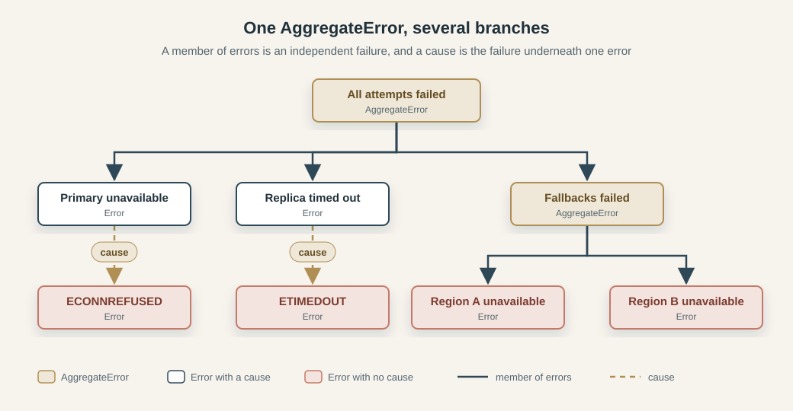

Your JS Error Is Lying to You
Warning: this is a very, very long article. The TLDR below lists the findings, and the table of contents links to each section.
TLDR
JSON.stringify(err)gives you{}becausemessageandcauseare non-enumerable.Object.keys, spread, andObject.assignmiss them too. And whatever lands in yourcatchblock might not be anErrorat all.- The stack trace isn't part of the language. In V8 it's recorded where the error was created, not where it was thrown, it stops at 10 frames by default, and any code can overwrite it.
- If you wrap an error without passing
{ cause }, the original failure is gone. If you do pass it, you still have to walk the chain to see it, and the chain can loop back on itself. AggregateErrorandSuppressedErrorcan hold several failures at once, so what you're looking at may be a tree, not a single chain.- Node.js, Deno, Bun, Chrome, Firefox, and WebKit agree on what the spec says. They disagree on stack format and depth, extra properties, and the wording of their own error messages.
structuredClone,postMessage, worker threads, and child-process IPC each keep a different part of an error. None of them hands you the original object.- Your HTTP clients don't need your stack traces. Send them a small problem document, such as RFC 9457 defines, and keep the details in your own logs.
- With Pino and Winston, what ends up in the log depends on which key you use and where you pass the error. Get it wrong and the message and stack vanish. Winston can even write
{"level":"error"}and nothing else. - What to do about it: always pass
causewhen you wrap, make retry and recovery decisions based on error codes, and build log records with a function you control. It should follow every link between errors, log only the fields you name, and stop at a depth limit.
Table of Contents
- The Error You See Is Not the Error You Have
- Your Stack Trace Is Not the Whole Story
- The Real Failure Is Buried in the Cause
- One Error Can Actually Be Several
- The Same Error, Different Runtime
- Serialization Changes the Evidence
- Errors Change When They Cross Boundaries
- Your Logger May Be Hiding the Failure
- Preserve the Failure, Not Just Its Message
After an outage, the first thing most of us do is open the logs and look for the request that failed. The line is there, with the right level, a clear message, and a field called err that should explain what went wrong. The field contains {}:
{"level":"error","msg":"request failed","err":{}}
The code that wrote this line caught a real error, one that had a message and a wrapped cause, and passed it to the logger as a field:
const err = new Error('Connection failed', {
cause: new Error('ECONNREFUSED')
})
console.log(JSON.stringify({ level: 'error', msg: 'request failed', err }))
JSON.stringify writes out the enumerable own properties of an object, and this error has none. Object.keys(err) returns [] for the same reason. Your JSON Is Lying to You shows the same empty result for Map, Set, RegExp, and Error. The information is still on the object, which Object.getOwnPropertyNames shows, because it also lists non-enumerable properties:
console.log(Object.getOwnPropertyNames(err))
// [ 'stack', 'message', 'cause' ] (V8)
// [ 'fileName', 'lineNumber', 'columnNumber', 'message', 'cause' ] (Firefox)
The message and the cause are own properties that happen to be non-enumerable, so any code that goes through enumeration never sees them. name is missing from both lists because it is inherited from Error.prototype. The stack is a property that ECMAScript does not define at all, which is why V8 lists it as an own property while Firefox lists fileName, lineNumber, and columnNumber instead. The same call on the same code returns different property sets, because what an error carries beyond message and cause is up to the engine.
A function that reads an error therefore reads whichever of these properties it was written to look at. console.log(err) in Node.js prints the message, the stack, and the nested cause, since its formatter looks for all of them. JSON.stringify looks for enumerable properties and finds nothing.
An error rarely stays where it was created. It is wrapped by the layers above it, copied, sent to another thread, returned in a response, and finally written to a log, and each of these steps reads some properties and drops the others. This article follows a single failure through five stages. It starts with what the original Error contains, then looks at what its stack and cause chain can tell you, how engines and runtimes change the picture, what survives serialization and execution boundaries, and finally what a logger writes down.
The Error You See Is Not the Error You Have
The empty JSON in the opening example came down to one attribute on two properties, but an error object has more going on than that, and the value you are holding is not always the one you expect.
Properties That Exist but Do Not Enumerate
The opening example listed the properties an error owns. Their descriptors show why some of them stay invisible to other code:
const err = new Error('Connection failed', {
cause: new Error('ECONNREFUSED')
})
Object.getOwnPropertyDescriptor(err, 'message')
// { value: 'Connection failed', writable: true, enumerable: false, configurable: true }
Object.getOwnPropertyDescriptor(err, 'cause')
// { value: Error: ECONNREFUSED, writable: true, enumerable: false, configurable: true }
Object.getOwnPropertyDescriptor(err, 'stack')
// { get: [Function], set: [Function], enumerable: false, configurable: true } (Node.js 24.2.0)
The enumerable: false on message and cause is what produced the empty JSON. Error adds both properties to the new object as non-enumerable whenever you pass them. If you pass no message, the error has no own message at all:
const bare = new Error()
Object.hasOwn(bare, 'message') // false
bare.message // '' (inherited from Error.prototype)
stack is an accessor with a getter and a setter, not a plain value. The specification does not define it, so this shape belongs to V8 in Node.js 24.2.0, and other runtimes list different properties for the same error.
Thrown Values Are Not Always Errors
JavaScript lets you throw any value, and a catch block receives exactly what was thrown:
for (const value of [new Error('failed'), 'failed', null, { message: 'failed', code: 'E_FAIL' }]) {
try {
throw value
} catch (caught) {
console.log(typeof caught, caught instanceof Error, caught?.message)
}
}
// object true failed
// string false undefined
// object false undefined
// object false failed
The last case is particularly awkward. The plain object has a message and reads like an error, but instanceof Error rejects it. For null, a plain caught.message would throw a TypeError inside the handler. This is why TypeScript types the catch variable as unknown under strict, through the useUnknownInCatchVariables option, and why err.message needs a check before it is trusted.
The instanceof Error check has a second weakness. Every JavaScript realm has its own Error constructor, and an error from another realm inherits from that realm's prototype:
import vm from 'node:vm'
const foreign = vm.runInNewContext('new Error("x")')
console.log(foreign instanceof Error) // false
console.log(Object.prototype.toString.call(foreign)) // [object Error]
console.log(Error.isError(foreign)) // true
An iframe creates a separate realm in the same way. Error.isError is available in Node.js 24.2.0 and recognises the foreign error, while instanceof does not.
Custom Error Classes
A subclass adds its own properties on top of the built-in ones:
class DatabaseError extends Error {
constructor(query, cause) {
super('Database query failed', { cause })
this.name = 'DatabaseError'
this.query = query
this.code = 'DB_FAILED'
}
}
const dbErr = new DatabaseError('SELECT 1', new Error('ECONNREFUSED'))
Object.keys(dbErr)
// [ 'name', 'query', 'code' ]
Object.getOwnPropertyNames(dbErr)
// [ 'stack', 'message', 'cause', 'name', 'query', 'code' ]
JSON.stringify(dbErr)
// {"name":"DatabaseError","query":"SELECT 1","code":"DB_FAILED"}
Assignment in the constructor creates ordinary enumerable properties, so the JSON now contains name, query, and code and still omits message and cause. Your JSON Is Lying to You describes the same split for class instances: constructor-assigned fields survive serialization, and prototype methods and private fields do not. The record has the fields the author added and none of the fields that describe the failure itself. A name assigned this way is also an own property, while the base Error takes it from the prototype.
The class, the name string, and the code are separate values that can disagree. Without the assignment in the constructor, a subclass keeps the inherited name:
class PoolError extends Error {}
const poolErr = new PoolError('Pool exhausted')
poolErr.constructor.name // 'PoolError'
poolErr.name // 'Error'
Code that checks instanceof tests the prototype chain, code that reads name gets a string anyone can reassign, and a code exists only if the author defined one.
An error object therefore holds more than its enumerable properties show, and a value caught in a catch block is not guaranteed to be an Error at all. If inspecting an error already depends on who does the looking, the stack trace deserves the same scrutiny, since it is the part most developers trust without checking.
Your Stack Trace Is Not the Whole Story
A stack trace looks like the most trustworthy part of an error, because it lists function names, files, and line numbers. It is a snapshot that the engine takes at one particular moment and formats in a way the specification leaves open. This section looks at when the snapshot is taken, what the language guarantees about it, how asynchronous code shows up in it, and how easily it can be changed.
Where the Stack Begins
Create an error in one function and throw it from another:
function createError() {
return new Error('Something failed')
}
function throwLater(err) {
throw err
}
const err = createError()
try {
throwLater(err)
} catch (caught) {
console.log(caught === err) // true
console.log(caught.stack)
}
// Error: Something failed
// at createError (file:///app.mjs:2:10)
// at file:///app.mjs:9:13
// ...
The stack lists createError and the line that called it. throwLater does not appear, although that is where the error was thrown. V8 collects the stack trace when the error is created, and throw only moves the object up the call chain. Throwing the same object again changes nothing, so an error created in a helper, in a factory, or at module load time reports that place, whichever code eventually throws it.
The Specification Does Not Define Stacks
ECMAScript defines message, name, and cause in its Error Objects section, through the Error constructor and InstallErrorCause. That section has no stack property. V8 describes it as a non-standard property, so its format, its length, and the tools for changing it come from the engine. Node.js and Chrome run V8, so the examples here show V8's behaviour.
V8 keeps only the 10 most recent frames by default, as its stack trace API documentation states. The limit applies when the error is created, and the frames beyond it are never recorded:
function recurse(n) {
return n === 0 ? new Error('deep') : recurse(n - 1)
}
console.log(recurse(30).stack.split('\n').length) // 11
Error.stackTraceLimit = 3
console.log(recurse(30).stack.split('\n').length) // 4
The 11 lines are the header and 10 frames, the 4 lines are the header and 3 frames. Error.stackTraceLimit is a V8 setting, and nothing in the language says a stack must have any particular depth.
Error.captureStackTrace(target, fn) writes a stack onto any object and leaves out fn and everything it called. This is how a library hides its own internals from the trace it reports:
function fail() {
const target = {}
Error.captureStackTrace(target, fail)
return target
}
function outer() {
return fail()
}
console.log(outer().stack)
The stack of target starts at outer, the caller of fail, and its first line is only Error, because a plain object has no message to show.
Error.prepareStackTrace goes a step further. V8 calls it with the error and an array of structured call sites, and whatever it returns becomes the value of stack:
Error.prepareStackTrace = (error, frames) => `${frames.length} frames`
console.log(new Error('p').stack) // a string made of whatever the hook returns
Any code that sets this hook changes the format of every error created after it, and the structured call sites are available only because V8 provides them. Source maps follow the same pattern. Node.js reports positions in the generated JavaScript unless it runs with --enable-source-maps, so a stack from compiled TypeScript points into the build output. A stale or mismatched source map can also point a stack at the wrong line, which Your console.log Is Lying to You describes for stack traces in the browser console.
None of these facilities belongs to the language. They work in Node.js and Chrome, and portable code cannot depend on them.
Async Frames Are Reconstructed
Call a chain of async functions where the innermost one fails after an await:
Async function chain and its stack
async function loadConfig() {
await null
throw new Error('Config missing')
}
async function startServer() {
await loadConfig()
}
async function main() {
await startServer()
}
try {
await main()
} catch (e) {
console.log(e.stack)
}
// Error: Config missing
// at loadConfig (file:///app.mjs:20:9)
// at async startServer (file:///app.mjs:24:3)
// at async main (file:///app.mjs:28:3)
// at async file:///app.mjs:32:3
After the await, loadConfig resumes from the microtask queue, so startServer and main are no longer on the call stack. V8 rebuilds those frames by following the chain of promises that were waiting on each other, and marks them with async. The history is reconstructed from the promise chain, not read from the stack.
A callback scheduled with a timer has no such chain:
function loadConfigLater() {
setTimeout(() => {
try { parseConfig() } catch (e) { console.log(e.stack) }
}, 0)
}
function parseConfig() {
throw new Error('Config missing')
}
loadConfigLater()
// Error: Config missing
// at parseConfig (file:///app.mjs:44:9)
// at Timeout._onTimeout (file:///app.mjs:39:11)
// at listOnTimeout (node:internal/timers:608:17)
// at process.processTimers (node:internal/timers:543:7)
loadConfigLater scheduled the callback, but nothing connects the two, so the trace ends in the timer machinery. Whether the origin of an operation survives depends on how it was scheduled.
The Stack Can Be Changed
The stack property is writable. Node.js 24.2.0 builds the string the first time it is read, so the header line shows the message that was in place at that moment:
const a = new Error('x')
console.log(a.stack.split('\n')[0]) // Error: x
a.message = 'changed'
console.log(a.stack.split('\n')[0]) // Error: x
a.stack = 'custom'
console.log(a.stack) // custom
In Node.js, changing message before the first read changes the header, and after the first read it changes nothing. Assigning to stack replaces the whole string, and any code that holds the error can do it. The frames are a record of how the error was created, and the text around them depends on when it was read and who touched it afterwards.
A stack trace is a diagnostic string that one engine produced at one moment, and it ends where that engine stops tracking history. It can tell you where an error was created, and it cannot always tell you why the failure happened. Preserving the underlying failure is the job of error chaining.
The Real Failure Is Buried in the Cause
The top of a stack trace names the code that created the error. In a layered application that code is usually a wrapper, and the failure that matters happened several layers below it. This section looks at how wrapping hides it, how the cause option keeps it, and what it takes to read a chain of causes back.
How Wrapping Loses Information
Take an application with a database driver, a repository, a service, and an HTTP handler. The driver throws an error whose code says why the connection failed:
class DriverError extends Error {
constructor(message, code) {
super(message)
this.name = 'DriverError'
this.code = code
}
}
function runQuery() {
throw new DriverError('connect ECONNREFUSED 10.0.0.5:5432', 'ECONNREFUSED')
}
The repository wants its callers to see a message that fits its own level, so it catches the driver error and throws a new one:
function loadCustomer(id) {
try {
return runQuery(id)
} catch (err) {
throw new Error('Unable to load customer')
}
}
Everything above the repository now receives this:
try {
loadCustomer(7)
} catch (err) {
console.log(err.message) // Unable to load customer
console.log(err.cause) // undefined
console.log(err.stack.includes('runQuery')) // false
console.log(err.stack.includes('ECONNREFUSED')) // false
}
The service and the HTTP handler get a message that says nothing about the cause and a stack that starts in the repository. The driver error existed only inside the catch block, and nothing refers to it once the new error is thrown.
Preserving the Original Failure
The Error constructor takes an options object as its second argument, and its cause is stored on the new error:
function loadCustomer(id) {
try {
return runQuery(id)
} catch (err) {
throw new Error('Unable to load customer', { cause: err })
}
}
According to InstallErrorCause in the specification, the cause can be any value, and the property is created whenever the options object has a cause key, even when its value is undefined:
for (const cause of ['str', 42, null, undefined, { a: 1 }]) {
const err = new Error('x', { cause })
console.log(Object.hasOwn(err, 'cause'), err.cause)
}
// true for every value, including undefined
The property is non-enumerable, like message, so JSON.stringify still produces {} for the wrapped error. Node.js recognises it, and console.log(err) prints the cause with its own stack and fields:
Error: Unable to load customer
at loadCustomer (file:///app.mjs:25:11)
... {
[cause]: DriverError: connect ECONNREFUSED 10.0.0.5:5432
at runQuery (file:///app.mjs:10:9)
... {
code: 'ECONNREFUSED'
}
}
The cause keeps the stack from the place where the driver created it. The stack of the outer error still lists only the frames from the repository, so the two stacks describe two different moments.
Reading the Whole Chain
Add a service layer on top of the repository, with each layer wrapping what it catches:
Repository and service layers with the loop that reads the chain
function repository() {
try {
runQuery()
} catch (cause) {
throw new Error('Repository failed', { cause })
}
}
function service() {
try {
repository()
} catch (cause) {
throw new Error('Unable to load customer', { cause })
}
}
try {
service()
} catch (err) {
for (let current = err; current; current = current.cause) {
console.log(current.message)
}
}
// Unable to load customer
// Repository failed
// connect ECONNREFUSED 10.0.0.5:5432
Each message answers a different question. The outer one says what the application was doing, and only the last one says what happened. Code that reads the outer message gets the context without the failure, and the same holds for the outer stack, which was captured where the outer error was created. The chain is complete only for a reader that walks it, either through a formatter such as the one in Node.js or through a loop like this one.
Chains Can Be Malformed
The loop above stops because every chain in the example ends. Nothing in the language guarantees that:
const a = new Error('a')
const b = new Error('b', { cause: a })
a.cause = b
for (let current = a; current; current = current.cause) {
// never ends
}
The assignment creates an enumerable property, unlike the non-enumerable one the constructor makes, and the chain now points back to its start. Node.js detects the cycle when it prints the error and marks it as [Circular *1], but the loop has no such protection. A cause can also be a string or a number, which has no cause of its own, and a chain built by a library can be arbitrarily long. A traversal that other code depends on needs to track the objects it has visited and stop at a depth limit:
function* causeChain(err, limit = 10) {
const seen = new Set()
let current = err
while (!seen.has(current) && seen.size < limit) {
seen.add(current)
yield current
if (current === null || typeof current !== 'object' || !('cause' in current)) return
current = current.cause
}
}
With this function the cycle above yields a and b and stops, an error that is its own cause is yielded once, and a chain of 20 errors yields 10. A cause that is a plain string is yielded as the last element.
Wrapping keeps context when the original error is passed as the cause, and only code that follows the chain can recover it. A chain still assumes that each wrapper has one underlying failure, and concurrent operations break that assumption.
One Error Can Actually Be Several
A chain of causes assumes one failure at each step, but programs that run operations concurrently, or release resources after a failure, produce errors with a different shape. This section looks at an error that collects several failures, at aggregates nested inside aggregates, and at the error that records a failure during cleanup.
Several Causes in One Error
Race three sources of the same data, and let all of them fail with different kinds of values:
Promise.any with three rejections
try {
await Promise.any([
Promise.reject(new Error('primary down')),
Promise.reject('replica timed out'),
Promise.reject(404)
])
} catch (err) {
console.log(err.name, err.message)
// AggregateError All promises were rejected
console.log(Object.keys(err))
// []
console.log(Object.getOwnPropertyNames(err))
// [ 'stack', 'message', 'errors' ]
console.log(err.errors)
// [ Error: primary down, 'replica timed out', 404 ] (stack of the first omitted)
console.log(JSON.stringify(err))
// {}
}
Promise.any rejects with an AggregateError when every input rejects. The AggregateError constructor stores the rejection reasons in errors, and it defines that property as non-enumerable, which makes the failures invisible to Object.keys and JSON.stringify for the same reason as message and cause. The reasons keep the type they were rejected with, so an entry can be an error, a string, or a number.
The aggregate also has a stack of its own. In this run it contains only the header line, with no frames, so it says nothing about where the individual failures happened. Each error in errors carries its own stack, and the string and the number carry none.
Aggregates Can Contain Aggregates
The members of an aggregate can be any errors, including errors with causes and other aggregates:
const primary = new Error('Primary unavailable', {
cause: new Error('ECONNREFUSED')
})
const replica = new Error('Replica timed out', {
cause: new Error('ETIMEDOUT')
})
const fallbacks = new AggregateError(
[new Error('Region A unavailable'), new Error('Region B unavailable')],
'Fallbacks failed'
)
const all = new AggregateError([primary, replica, fallbacks], 'All attempts failed')
The structure of all is a tree:

A traversal that follows only .cause finds the two low-level errors under the first two members and never reaches the fallbacks. A traversal that follows only .errors finds the members and misses ECONNREFUSED and ETIMEDOUT. Printing the error has a limit of its own. console.log(all) in Node.js stops at its default depth, and the inner aggregate appears as [errors]: [Array]. Passing { depth: null } to util.inspect prints the whole tree.
Cleanup Failures
A failure can also happen while releasing a resource after another failure. Explicit resource management makes this visible. When a value declared with using is disposed and its [Symbol.dispose]() method throws while another error is already in flight, the language creates a SuppressedError:
class Connection {
[Symbol.dispose]() {
throw new Error('close failed')
}
}
try {
using connection = new Connection()
throw new Error('query failed')
} catch (err) {
console.log(err.name) // SuppressedError
console.log(err.error.message) // close failed
console.log(err.suppressed.message) // query failed
console.log(err.message) // An error was suppressed during disposal
}
The SuppressedError constructor takes an error and a suppressed value and stores both as non-enumerable properties. The names follow the order of events: the disposal error replaced the query error as the one being thrown, so it sits in error, and the query error that it replaced sits in suppressed. A reader who looks at error alone sees the cleanup problem and loses the original failure. This example ran in Node.js 24.2.0 without any flag, and other runtimes and transpilers need to be checked before relying on it.
The Failure Structure Is a Graph
The three relationships have different meanings. A cause points from an error to the error that led to it. errors holds independent failures that an aggregate collected. error and suppressed hold the failure thrown during cleanup and the failure it replaced. Storing one under the name of another changes what a reader concludes, for example by putting several unrelated failures into cause as an array, which makes them look like one chain of explanation.
A diagnostic representation has to follow all three and keep the name of the relationship with each branch. The causeChain function from the previous section follows only one of them, and the limits on cycles and depth apply to the whole graph.
The diagnostic content of an error can branch in several directions, and every result so far came from Node.js 24.2.0. Whether other runtimes expose the same information in the same way is the next question.
The Same Error, Different Runtime
This section runs one script in six environments and records what each of them reports for the same errors. The script is listed in full below. The goal is to separate three layers that are easy to confuse: what the language guarantees, what an engine adds, and what the host environment contributes.
The Test Matrix
| Environment | Version | Engine |
|---|---|---|
| Node.js | 24.2.0 | V8 |
| Deno | 2.9.6 | V8 15.0.245.2 |
| Bun | 1.4.4 | JavaScriptCore |
| Chrome | 157.0.8103.51 | V8 |
| Firefox | 159.0 | SpiderMonkey |
| WebKit | 27.2 | JavaScriptCore |
Everything ran on Windows. Chrome ran headless, and Firefox and WebKit were the builds that Playwright provides.
The Script
The script is one function, probe, that returns everything it measured as a plain object. It builds an error with a message, a cause, and a custom field, reads its properties and stack, triggers a set of language-level and host-level failures, and records what each of them looks like. It runs unchanged in all six environments, and the only host-specific part is a function that reads a missing file, which the caller passes in:
probe.mjs
// probe.mjs
export async function probe(readMissingFile) {
const out = {}
const kind = (o, k) => {
const d = Object.getOwnPropertyDescriptor(o, k)
if (!d) return 'absent'
return ('get' in d || 'set' in d ? 'accessor' : 'data') + (d.enumerable ? ' enumerable' : ' non-enumerable')
}
const describe = (e) => {
if (!(e instanceof Error) && !(e && typeof e === 'object' && 'name' in e)) return { thrown: String(e), type: typeof e }
return {
ctor: e.constructor && e.constructor.name,
name: e.name,
message: e.message,
code: e.code,
isError: e instanceof Error,
cause: e.cause === undefined ? undefined : (e.cause && e.cause.name ? e.cause.name + ': ' + e.cause.message : String(e.cause)),
ownNames: Object.getOwnPropertyNames(e)
}
}
// own properties and descriptors
const err = new Error('Connection failed', { cause: new Error('ECONNREFUSED') })
err.code = 'E_CONN'
out.ownNames = Object.getOwnPropertyNames(err)
out.keys = Object.keys(err)
out.json = JSON.stringify(err)
out.kinds = Object.fromEntries(out.ownNames.map((k) => [k, kind(err, k)]))
out.stackOnErrorPrototype = kind(Error.prototype, 'stack')
out.stackInErr = 'stack' in err
out.stackType = typeof err.stack
out.errorPrototypeNames = Object.getOwnPropertyNames(Error.prototype)
out.errorStatics = Object.getOwnPropertyNames(Error)
out.apis = {
captureStackTrace: typeof Error.captureStackTrace,
stackTraceLimit: Error.stackTraceLimit,
prepareStackTrace: typeof Error.prepareStackTrace,
isError: typeof Error.isError
}
const agg = new AggregateError([new Error('a')], 'agg')
out.aggregateOwnNames = Object.getOwnPropertyNames(agg)
// stacks
function a() { const r = b(); return r }
function b() { const r = c(); return r }
function c() { return new Error('boom') }
const s = a().stack
out.stackLines = s.split('\n').slice(0, 5)
out.stackHasMessage = s.includes('boom')
out.stackStable = err.stack === err.stack
const anon = (() => new Error('anon'))()
out.anonymousLine = anon.stack.split('\n')[0] + ' || ' + (anon.stack.split('\n')[1] || '')
function rec(n) { if (n === 0) return new Error('deep'); const r = rec(n - 1); return r }
out.depthFrames = rec(200).stack.split('\n').filter((l) => l.trim()).length
function tail(n) { return n === 0 ? new Error('tail') : tail(n - 1) }
out.depthFramesTailCall = tail(200).stack.split('\n').filter((l) => l.trim()).length
const m1 = new Error('x'); void m1.stack; m1.message = 'changed'
const m2 = new Error('x'); m2.message = 'changed'
out.headerAfterReadThenChange = m1.stack.split('\n')[0]
out.headerAfterChangeThenRead = m2.stack.split('\n')[0]
async function f3() { await null; throw new Error('async fail') }
async function f2() { await f3() }
async function f1() { await f2() }
try { await f1() } catch (e) { out.asyncStack = e.stack.split('\n').slice(0, 5) }
// messages of language errors
const lang = {}
const tryIt = (label, fn) => { try { fn() } catch (e) { lang[label] = describe(e) } }
tryIt('nullProperty', () => null.x)
tryIt('notAFunction', () => { const o = {}; o.f() })
tryIt('badJson', () => JSON.parse('{'))
tryIt('negativeArray', () => new Array(-1))
tryIt('badUri', () => decodeURIComponent('%'))
tryIt('cloneFunction', () => structuredClone(() => {}))
out.language = lang
// host errors
const host = {}
const tryAsync = async (label, fn) => { try { await fn(); host[label] = 'no error' } catch (e) { host[label] = describe(e) } }
if (readMissingFile) await tryAsync('fileNotFound', readMissingFile)
await tryAsync('connectionRefused', () => fetch('http://127.0.0.1:59999/'))
await tryAsync('dnsFailure', () => fetch('http://nonexistent.invalid/'))
await tryAsync('abortedFetch', () => fetch('http://127.0.0.1:59999/', { signal: AbortSignal.abort() }))
const reason = AbortSignal.abort().reason
host.abortReason = describe(reason)
out.host = host
return out
}
Node.js, Deno, and Bun run it through a small runner that chooses the file-reading function for the host, prints the result as JSON, and then prints an error with console.log for the inspection results below. node run.mjs, deno run -A run.mjs, and bun run.mjs start it:
run.mjs
// run.mjs
import { probe } from './probe.mjs'
const host = typeof Deno !== 'undefined' ? 'deno' : typeof Bun !== 'undefined' ? 'bun' : 'node'
const readMissingFile = host === 'deno'
? () => Deno.readTextFile('missing.txt')
: async () => (await import('node:fs/promises')).readFile('missing.txt')
const out = await probe(readMissingFile)
out.runtime = host
out.version = host === 'deno' ? Deno.version : host === 'bun' ? Bun.version : process.versions.node
console.log(JSON.stringify(out, null, 2))
console.log('=====INSPECT')
const err = new Error('Connection failed', { cause: new Error('ECONNREFUSED') })
err.code = 'E_CONN'
console.log(err)
console.log('---- {err}')
console.log({ err })
The browsers load the same function as an ES module from a local HTTP server, through this page. Playwright opens the page, waits for window.__result, and collects the console messages, so the locations in the browser stacks are real URLs:
page.html
<!-- page.html -->
<!doctype html>
<meta charset="utf-8">
<script type="module">
import { probe } from './probe.mjs'
const out = await probe()
function createError() { return new Error('Something failed') }
function throwLater(e) { throw e }
const e21 = createError()
try { throwLater(e21) } catch (c) { out.article21 = c.stack }
const err = new Error('Connection failed', { cause: new Error('ECONNREFUSED') })
err.code = 'E_CONN'
console.log(err)
console.log({ err })
console.error(err)
window.__result = out
</script>
The browsers call probe() without an argument, so the file-not-found case runs only on the three server-side runtimes.
The Anatomy of the Same Error
Every environment ran new Error('Connection failed', { cause }) and then assigned err.code = 'E_CONN':
| Environment | Own properties | Where stack lives |
Error.stackTraceLimit |
|---|---|---|---|
| Node.js, Deno, Chrome | stack, message, cause, code |
own accessor | 10 |
| Bun | message, cause, code, originalLine, originalColumn, line, column, sourceURL, stack |
own data property | 10 |
| Firefox | fileName, lineNumber, columnNumber, message, cause, code |
accessor on Error.prototype |
128 |
| WebKit | message, cause, code, line, column, sourceURL, stack |
own data property | 100 |
Some results are identical everywhere. message and cause are non-enumerable and code is enumerable in all six environments, so JSON.stringify(err) returns {"code":"E_CONN"} in each of them. Error.isError and Error.captureStackTrace exist in all six. Everything else in the table differs between the engine families. The engines add their own properties, and they disagree about whether stack belongs to the instance, to the prototype, or to neither as a plain value. Error.prepareStackTrace is a function in Node.js and Bun and undefined in the other four.
Stack Traces
The same three-function call chain produces three frame formats:
V8 (Node.js, Deno, Chrome)
Error: boom
at c (http://127.0.0.1:8765/probe.mjs:45:25)
SpiderMonkey (Firefox)
c@http://127.0.0.1:8765/probe.mjs:45:25
JavaScriptCore (WebKit)
c@http://127.0.0.1:8765/probe.mjs:45:34
Firefox and WebKit do not put the message in the stack string, and the column for the same call is 25 in V8 and Firefox and 34 in WebKit. The depth limits differ as well. A recursion 200 calls deep produces a stack with 11 lines in Node.js, Deno, and Chrome (the header and 10 frames), 128 lines in Firefox, and 100 in WebKit. Async frames are marked async f2 in V8 and WebKit and async*f2 in Firefox.
Two results concern when the stack is formed. After message is changed and before the stack is first read, the header says Error: changed in Node.js, Deno, and Bun, and Error: x in Chrome. WebKit also differs in how it treats calls in tail position. A function that only returns tail(n - 1) produces a stack of 3 lines in WebKit, where the same recursion written without a tail call produces 100. ES2015 specified proper tail calls, and among the six environments only WebKit shows the effect. Bun produces 3 lines for both versions, so its result cannot be attributed to tail calls, as the next paragraph shows.
Bun 1.4.4 produced a result that the other five did not. Run the first example of the stack section next to a function that creates and throws an error itself:
// article21.mjs
function createError() { return new Error('Something failed') }
function throwLater(err) { throw err }
const err = createError()
try { throwLater(err) } catch (caught) { console.log(caught.stack) }
function thrower() { const e = new Error('direct'); throw e }
function outer() { try { thrower() } catch (e) { return e } }
console.log(outer().stack)
Bun printed this, with the paths shortened:
Error: Something failed
at article21.mjs:3:13
Error: direct
at thrower (article21.mjs:5:36)
at outer (article21.mjs:6:26)
at article21.mjs:7:13
The first stack lists the caller and leaves out createError, which created the error. The second lists thrower. Node.js and Deno print createError as the first frame of the first stack. This run does not show why Bun differs, and it means that the creation site is not reliably the first frame of a stack on every runtime.
Inspection
console.log(err) is a host feature, and the hosts format it differently. Node.js prints the message, the stack, the custom field, and the nested cause as [cause]. Deno prints the same structure with double-quoted strings and without internal frames. Bun prints a source excerpt around the line that created the error, then error: Connection failed with the code field, and the cause as a second block.
For the browsers, the run captured the text of the console messages through Playwright, which is the serialization the protocol delivers and not what the developer tools show. In Chrome that text contained the stack for console.log(err) and no code or cause. In WebKit it was the single line Error: Connection failed, and in Firefox the protocol delivered only Error and JSHandle@object. The interactive developer-tools views were not compared, so what they show for code and the cause remains open. They also behave differently from a printed string in another way that Your console.log Is Lying to You describes: a logged object is shown as it is when the entry is expanded, not as it was when it was logged.
Host-Generated Errors
Some failures come from the language, and their types agree while their messages do not:
| Failure | V8 | SpiderMonkey | JavaScriptCore |
|---|---|---|---|
null.x |
Cannot read properties of null (reading 'x') | can't access property "x" of null | null is not an object (evaluating 'null.x') |
new Array(-1) |
Invalid array length | invalid array length | Array length must be a positive integer of safe magnitude. |
JSON.parse('{') |
Expected property name or '}' in JSON at position 1 (line 1 column 2) | JSON.parse: end of data while reading object contents at line 1 column 2 of the JSON data | JSON Parse error: Expected '}' |
All three produce TypeError, RangeError, and SyntaxError respectively, so the name can be compared across engines and the message cannot.
Failures that come from the host differ in their types, codes, and causes. A fetch to a port where nothing listens:
| Environment | Error |
|---|---|
| Node.js | TypeError: fetch failed, with a cause Error: connect ECONNREFUSED 127.0.0.1:59999 |
| Deno | TypeError: fetch failed, with a cause that ends in (os error 10061) |
| Bun | TypeError: ECONNREFUSED: Unable to connect. Is the computer able to access the url?, with code: 'ECONNREFUSED' |
| Chrome | TypeError: Failed to fetch |
| Firefox | TypeError: NetworkError when attempting to fetch resource. |
| WebKit | TypeError: Load failed |
The three server-side runtimes expose the reason through a cause or a code. The browsers report the same message for a refused connection and for a name that does not resolve, so the code that catches the error cannot tell the two apart. A missing file produces Error with code: 'ENOENT' plus errno, syscall, and path in Node.js and Bun, and an error of the class NotFound that also carries code: 'ENOENT' in Deno. An aborted fetch rejects with a DOMException named AbortError and code 20 in all six, with five different messages: "This operation was aborted" in Node.js, "The signal has been aborted" in Deno, "The operation was aborted." in Bun and WebKit, "signal is aborted without reason" in Chrome, and "The operation was aborted. " (with a trailing space) in Firefox.
What the Comparison Establishes
The results fall into three groups. The language guarantees are met everywhere: the error types and their name values, message and cause as non-enumerable own properties, the empty JSON, Error.isError, and errors on an AggregateError. Engine behaviour covers the extra own properties, the stack format and depth, whether a header exists, how async frames are marked, tail calls, and the text of language-level messages. Host behaviour covers the shape of fetch failures, the codes on file and network errors, the AbortError messages, and how the console prints an error.
Node.js, Deno, and Chrome share an engine family but not an engine version, and the run recorded the V8 version only for Deno. A difference between them, such as Error.prepareStackTrace or the point where the header is fixed, can come from the host or from the version, and this run does not separate the two.
The same error-producing JavaScript can expose different diagnostics depending on the engine and the host, and portable code cannot treat every property it observes as standard. These differences matter most when an error is turned into another representation, and that is the next stage.
Serialization Changes the Evidence
A serializer decides which properties to read, and an error stores its most useful properties where most serializers do not look. This section follows the failure through JSON, through object copying, through structured cloning, and through custom serialization methods, and ends with the decisions that remain when the serialization is written by hand.
JSON Does Not Understand Errors
Take the error from the beginning of the article, now with a cause and a custom field, and serialize it three ways:
const err = new Error('Connection failed', {
cause: new Error('ECONNREFUSED')
})
err.code = 'E_CONN'
JSON.stringify(err)
// {"code":"E_CONN"}
JSON.stringify({ error: err })
// {"error":{"code":"E_CONN"}}
JSON.stringify({ message: err.message, stack: err.stack, cause: err.cause })
// {"message":"Connection failed","stack":"Error: Connection failed\n at ...","cause":{}}
JSON.stringify reads the enumerable own properties of an object, so only code survives when the error itself is serialized. The third call selects the fields by hand and gets message and stack as strings, but the cause is an error again and serializes as {}. Selecting a property does not serialize what that property contains. Your JSON Is Lying to You lists the other properties this rule leaves out, such as inherited and symbol-keyed ones.
These three results were identical in Node.js, Deno, Bun, Chrome, Firefox, and WebKit.
Object Copying Produces Plain Objects
Copying an error with the usual tools has the same limit, because they read the same properties. Spread syntax, Object.assign, and Object.fromEntries(Object.entries(...)) all take the enumerable own properties, as described for CopyDataProperties and Object.entries. Use the DatabaseError from the section on custom classes:
const dbErr = new DatabaseError('SELECT 1', new Error('ECONNREFUSED'))
const copy = { ...dbErr }
console.log(copy instanceof Error) // false
console.log(copy.constructor.name) // Object
console.log(Object.keys(copy)) // [ 'name', 'query', 'code' ]
The copy has the fields that the constructor assigned and none of the built-in ones. Its prototype is Object.prototype, so it is not an Error and no instanceof check recognises it. Object.assign and Object.fromEntries produced the same result in all six environments.
Structured Cloning Keeps More but Not Everything
JSON.stringify and the copying tools read enumerable properties, and structuredClone follows a different rule for errors. It runs the HTML structured serialization algorithm, which has a branch for them, and The Structured Clone Algorithm covers the rest of its rules:
const clone = structuredClone(dbErr)
console.log(clone instanceof Error) // true
console.log(clone.constructor.name) // Error
console.log(clone.name) // Error
console.log(clone.message) // Database query failed
console.log(clone.cause) // Error: ECONNREFUSED
console.log(clone.code) // undefined
console.log(clone.query) // undefined
The result is a real Error that keeps the message and the cause and loses everything the subclass added, as Classes Lose Their Identity describes for application-defined types. The specification records three things for an error: its name, limited to Error, EvalError, RangeError, ReferenceError, SyntaxError, TypeError, and URIError, with every other name replaced by Error, its message when that is an own data property, and an implementation-defined string for the stack. It adds that user agents should attach any other interesting data, and that sentence is all the specification says about cause, custom fields, and aggregate errors. The runtimes handle them differently, which Errors Preserve an Engine-Defined Record already notes for cause:
| Case | Node.js, Deno, Chrome | Firefox | Bun | WebKit |
|---|---|---|---|---|
TypeError |
TypeError |
TypeError |
TypeError |
TypeError |
Subclass with name, code, query |
plain Error, fields gone |
same | same | same |
cause that is an Error |
kept as an Error |
kept as an Error |
dropped | converted to the string Error: inner |
cause that is a function |
throws DataCloneError |
throws DataCloneError |
no error, cause dropped | no error, cause becomes the string () => {} |
AggregateError |
plain Error, errors gone |
AggregateError with errors |
plain Error, errors gone |
plain Error, errors gone |
A clone can therefore lose the cause entirely or turn it into text, depending on the runtime, and only Firefox kept the members of an aggregate. A snapshot of an error taken with structuredClone, the default that Your console.log Is Lying to You recommends, keeps the message and, in some runtimes, the cause, and loses the custom fields. The function case shows what the rule for causes costs: the same cause option that accepts any value in the constructor can make structuredClone throw, as it does for any function in the graph.
toJSON Changes the Contract
A class can take control of JSON.stringify by defining toJSON. SerializeJSONProperty looks the method up and calls it before it serializes the value. Your JSON Is Lying to You covers toJSON, getters, and replacers in detail:
class ToJsonError extends Error {
constructor(message) {
super(message)
this.name = 'ToJsonError'
this.code = 'TJ'
}
toJSON() {
return { kind: 'ToJsonError', message: this.message }
}
}
const tj = new ToJsonError('custom json')
console.log(JSON.stringify(tj))
// {"kind":"ToJsonError","message":"custom json"}
const clone = structuredClone(tj)
console.log(typeof clone.toJSON) // undefined
console.log(clone.constructor.name) // Error
Structured cloning is a separate algorithm that has no serialization hook and never calls toJSON, and the clone is a plain Error without the method. The method also means that two error types can produce unrelated JSON while both inherit from Error. The DatabaseError from earlier serializes as {"name":"DatabaseError","query":"SELECT 1","code":"DB_FAILED"}, and ToJsonError serializes as {"kind":"ToJsonError","message":"custom json"}. A consumer of the JSON cannot rely on any shared field unless the application defines one.
Explicit Serialization Introduces Design Choices
When the built-in mechanisms lose information, the remaining option is to write the representation by hand, and every version of it is a choice. A small one keeps a stable identity and a safe message:
{
name: 'DatabaseError',
message: 'Query failed',
code: 'DB_FAILED'
}
A larger one keeps what a developer needs to debug the failure:
{
name: 'DatabaseError',
message: 'Query failed',
code: 'DB_FAILED',
stack: 'DatabaseError: Query failed\n at ...',
cause: { name: 'Error', message: 'ECONNREFUSED', stack: 'Error: ECONNREFUSED\n at ...' },
meta: { query: 'SELECT 1' }
}
The larger record is more useful and also bigger, and a long cause chain with a stack at every level multiplies its size. Building it means reading properties from an object that may hold anything. A BigInt in a custom field makes JSON.stringify throw a TypeError, a cyclic reference throws one as well, and the messages differ by runtime: "Do not know how to serialize a BigInt" in Node.js, "JSON.stringify cannot serialize BigInt." in Bun, and "BigInt value can't be serialized in JSON" in Firefox. A getter on an enumerable property runs during serialization in all six runtimes, so code that walks an error can execute code that belongs to the error. A cause can be any value, so the extraction code cannot assume it has a message.
Every field that is copied into the record is data that leaves the process. A custom field that holds a request URL with a token or a query with personal data ends up in the output unless the code names the fields it allows. Whether the receiving side should rebuild an Error from the record is a separate question. Encode Custom Types Outside the Algorithm shows the pattern for application types, a tag plus a decode function that validates the fields first, and the question returns when errors cross process and network boundaries.
No generic mechanism preserves the complete diagnostic state of an error. JSON reads the enumerable properties, copying produces plain objects, structured cloning keeps what the runtime chooses to keep, and toJSON replaces the output with whatever the class author wrote. Each of them is a transformation with its own rules, and one of them applies whenever an error crosses an execution boundary.
Errors Change When They Cross Boundaries
Serialization stays abstract until an error actually travels. This section sends the same error between a worker and its parent, between two processes, and between a server and a client, and records what the receiving side holds in each case.
What Crossing a Boundary Means
Three kinds of boundary appear in practice. A worker or an iframe runs JavaScript in a separate context from the code that created the error. A child process is a separate program, and it can only exchange messages with its parent. A network protocol carries the failure to a client that may not be written in JavaScript at all.
In none of these cases can the receiver hold the original object, because the object lives in the memory of the sender. Workers, for example, run with separate heaps, so nothing can pass an ordinary reference between threads. The error has to be cloned, serialized, or described, and the receiver works with the result.
Web Workers
Create the DatabaseError from earlier inside a worker and send it to the page:
// worker.mjs
class DatabaseError extends Error {
constructor(query, cause) {
super('Database query failed', { cause })
this.name = 'DatabaseError'
this.query = query
this.code = 'DB_FAILED'
}
}
self.onmessage = () => {
const err = new DatabaseError('SELECT 1', new Error('ECONNREFUSED'))
self.postMessage({ err })
}
// main.mjs
const worker = new Worker('./worker.mjs', { type: 'module' })
worker.onmessage = ({ data }) => {
const { err } = data
console.log(err instanceof Error) // true
console.log(err.constructor.name) // Error
console.log(err.name) // Error
console.log(err.message) // Database query failed
console.log(err.cause) // Error: ECONNREFUSED
console.log(err.code) // undefined
console.log(err.stack.split('\n')[0]) // DatabaseError: Database query failed
}
worker.postMessage('go')
The page receives an Error built from its own realm, which is why instanceof Error holds, as Values Belong to the Receiving Realm describes, while the class only exists in the worker. The name is back to Error and code and query are gone, as in the structured clone results from the previous section. The stack still begins with DatabaseError, so the received object disagrees with its own stack about what it is. The stack travelled as a string that the worker's engine produced, and the name was reset by the clone.
The three browsers differ in the details:
| Chrome | Firefox | WebKit | |
|---|---|---|---|
err.name |
Error |
Error |
Error |
err.code, err.query |
undefined |
undefined |
undefined |
err.cause |
an Error |
an Error |
not an Error |
first line of err.stack |
DatabaseError: Database query failed |
DatabaseError@http://127.0.0.1:8765/worker-browser.mjs:3:5 |
@http://127.0.0.1:8765/worker-browser.mjs:10:32 |
an AggregateError sent the same way |
plain Error |
AggregateError with errors |
plain Error |
The cause result for WebKit matches the earlier structured clone table, where the same engine turned the cause into a string. In every browser the stack is the worker's, with locations in the worker's file, and it describes where the error was created, not where it arrived.
A worker that throws instead of sending a message produces a different result. The page receives an ErrorEvent, and event.error is null in all three browsers:
worker.onerror = (event) => {
console.log(event.error) // null
console.log(event.message)
}
The only information that arrives is the message string, and its wording depends on the browser. For the same DatabaseError, event.message was Uncaught DatabaseError: Database query failed in Chrome, Error: Database query failed in Firefox, and DatabaseError: Database query failed in WebKit. Throwing the string 'plain string' produced Uncaught plain string, uncaught exception: plain string, and plain string. There is no error object and no cause, and a handler that reads event.error finds nothing.
The same boundary applies in the other direction and to any other message. Messages Are Serialized Before Delivery covers the timing, which is that postMessage clones the value during the call.
Node.js Worker Threads
Run the same experiment with worker_threads:
// main.mjs
import { Worker } from 'node:worker_threads'
const worker = new Worker(new URL('./worker.mjs', import.meta.url))
worker.once('message', ({ err }) => {
console.log(err instanceof Error) // true
console.log(err.name) // Error
console.log(err.code) // undefined
console.log(err.cause.message) // ECONNREFUSED
})
The worker file is the one from the browser example with parentPort.postMessage({ err }) in place of self.postMessage. Node.js 24.2.0 gave the same result as Chrome: an Error with the message and the cause, the name reset, code and query gone, and a stack that still starts with DatabaseError. An AggregateError arrived as a plain Error.
The uncaught case is different here. When the worker throws, the parent receives the error through the 'error' event, and Node.js keeps more of it:
worker.on('error', (err) => {
console.log(err instanceof Error) // true
console.log(err.constructor.name) // Error
console.log(err.name) // DatabaseError
console.log(err.code) // DB_FAILED
console.log(err.query) // SELECT 1
console.log(err.cause.message) // ECONNREFUSED
})
The prototype is lost, since constructor.name is Error, but the own properties survived, including name, code, and query. The same worker therefore delivers the same error in two ways with two different results, depending on whether it was posted or thrown. A thrown string or a thrown object with a code arrived unchanged, as a string and as a plain object. Code that handles worker failures in Node.js and in a browser has to expect both an error object with custom fields and a message string with nothing else.
Child Processes and IPC
A forked child process talks to its parent through a channel with its own serialization setting. Send three errors from the child:
// child.mjs
const err = new DatabaseError('SELECT 1', new Error('ECONNREFUSED'))
const plain = new Error('plain')
plain.code = 'E_PLAIN'
const agg = new AggregateError([new Error('a'), 'b'], 'agg')
process.send({ err, plain, agg })
// parent.mjs
import { fork } from 'node:child_process'
for (const serialization of ['json', 'advanced']) {
const child = fork(new URL('./child.mjs', import.meta.url), { serialization })
child.once('message', ({ err, plain, agg }) => {
// inspect err, plain, and agg
})
}
The default mode, 'json', applies the rules from the serialization section. The parent receives plain objects with only the enumerable properties:
| Sent | Received with serialization: 'json' |
Received with serialization: 'advanced' |
|---|---|---|
DatabaseError |
plain object {"name":"DatabaseError","query":"SELECT 1","code":"DB_FAILED"} |
Error with the message, the cause, and a stack; name is Error; code and query gone |
Error with code |
plain object {"code":"E_PLAIN"} |
Error with the message; code gone |
AggregateError |
{} |
Error with the message; errors gone |
In JSON mode err instanceof Error is false, and the message and the cause are missing. The advanced mode returns real errors, and it is the closer match to structured cloning. The Node.js documentation says that it is based on the V8 serialization API and the structured clone algorithm, that it supports Error, and that properties set on objects of built-in types are not passed on. The results match that description, and they show that advanced serialization is not a lossless way to transport an error. It trades one set of lost fields for another.
HTTP Boundaries
A response crosses the boundary into code that the server does not control. Take a server that catches the nested error from the cause section and answers with a 503:
HTTP server with three error responses
const server = http.createServer((req, res) => {
try {
loadCustomer(7)
} catch (err) {
res.statusCode = 503
if (req.url === '/dump') {
res.end(JSON.stringify(err))
} else if (req.url === '/message-and-stack') {
res.end(JSON.stringify({ message: err.message, stack: err.stack }))
} else {
res.setHeader('content-type', 'application/problem+json')
res.end(JSON.stringify({
type: 'https://example.com/problems/customer-unavailable',
title: 'Customer data is temporarily unavailable',
status: 503,
detail: 'The customer record could not be loaded. Try again in a few seconds.',
instance: '/customers/7'
}))
}
}
})
A client that requested all three paths received, with the file paths shortened:
/dump
{}
/message-and-stack
{"message":"Unable to load customer","stack":"Error: Unable to load customer\n at loadCustomer (file:///app/http.mjs:16:11)\n at Server.<anonymous> (file:///app/http.mjs:22:5)\n at Server.emit (node:events:507:28)\n ..."}
/problem
{"type":"https://example.com/problems/customer-unavailable","title":"Customer data is temporarily unavailable","status":503,"detail":"The customer record could not be loaded. Try again in a few seconds.","instance":"/customers/7"}
The first response is the empty object from the start of the article. The second adds the fields that developers usually reach for next, and it puts the absolute path of the server's source file and the internal frames into the body of a public response. Neither response gives the client anything it can act on.
An HTTP response has a different purpose from an internal diagnostic record. The client needs a stable way to recognise the problem and enough text to react, and it should not receive the server's stack, its file paths, or the database host. RFC 9457 defines a format for this. Its media type is application/problem+json, and its members include type, which is the primary identifier of the problem and a URI, title, status, detail, and instance, plus any extension members that the problem type defines. The RFC says that detail should focus on helping the client correct the problem rather than giving debugging information, and that problem details are not a debugging tool for the underlying implementation. Its security considerations advise against exposing stack dumps through the HTTP interface.
The server still needs the full error, and that belongs in its own log. The response carries a deliberately small projection of it, and the instance value can tie the two together. Define the Wire Shape describes the same idea for any JSON boundary, which is to build the transport object from the fields the receiver needs.
Reconstructing an Error Is Not Restoring It
A client or a log consumer sometimes receives a representation of an error, such as the larger record from the serialization section, and wants an Error again. Take that record:
const record = {
name: 'DatabaseError',
message: 'Database query failed',
code: 'DB_FAILED',
stack: 'DatabaseError: Database query failed\n at runQuery (file:///srv/api/db.mjs:10:9)\n at loadCustomer (file:///srv/api/repository.mjs:25:11)',
cause: {
name: 'Error',
message: 'connect ECONNREFUSED 10.0.0.5:5432',
stack: 'Error: connect ECONNREFUSED 10.0.0.5:5432\n at connect (file:///srv/api/db.mjs:4:9)'
}
}
function rebuild(rec) {
const err = new Error(rec.message, rec.cause ? { cause: rebuild(rec.cause) } : undefined)
err.name = rec.name
if (rec.code) err.code = rec.code
return err
}
The new error has the message, the name, the code, and the cause. Its stack was created by rebuild, so the first frames point at the code that rebuilt it. The paths are shortened:
const plain = rebuild(record)
console.log(plain.stack.split('\n').slice(0, 3).join('\n'))
// DatabaseError: Database query failed
// at rebuild (file:///app/rebuild.mjs:19:15)
// at file:///app/rebuild.mjs:25:15
Assigning the recorded stack string replaces that text:
const withStack = rebuild(record)
withStack.stack = record.stack
console.log(withStack.stack)
// DatabaseError: Database query failed
// at runQuery (file:///srv/api/db.mjs:10:9)
// at loadCustomer (file:///srv/api/repository.mjs:25:11)
console.log(withStack instanceof Error) // true
console.log(withStack instanceof DatabaseError) // false
console.log(Object.getPrototypeOf(withStack) === Error.prototype) // true
console.log(withStack.constructor.name) // Error
The string now says where the original error was created, and the object is still a new Error made in this process. Its prototype is Error.prototype, and nothing makes it an instance of DatabaseError. The remote frames are text, and the engine does not treat them as frames of any call that happened here. console.log(withStack) in Node.js prints Error [DatabaseError] as the header, because the constructor name and the name property disagree. It also prints the cause with local frames from rebuild, since only the top-level error got its stack assigned:
Error [DatabaseError]: Database query failed
at runQuery (file:///srv/api/db.mjs:10:9)
at loadCustomer (file:///srv/api/repository.mjs:25:11) {
code: 'DB_FAILED',
[cause]: Error: connect ECONNREFUSED 10.0.0.5:5432
at rebuild (file:///app/rebuild.mjs:19:15)
...
}
A single printed error now mixes remote and local evidence. Preserving evidence about a remote failure and reconstructing the original object are two different goals. Evidence can be kept faithfully as data, with the remote stack stored as a string next to the fields, and it should be read as data. A rebuilt error is a new object that carries copies of some of the evidence, and its identity, its prototype, and its creation site all belong to the receiver.
Crossing a boundary therefore produces a representation of a failure and not a transfer of the original error. What survives depends on the transport and on the contract between the two sides. Most developers do not inspect an error at every boundary, though. They read logs, and a logger applies one more transformation.
Your Logger May Be Hiding the Failure
A log line that contains an error proves that something was written, but it says little about what. This section starts with the console, which formats errors in several ways, and then looks at two structured loggers, Pino 10.4.0 and Winston 3.19.0, to see which parts of an error each of them keeps by default and which parts need configuration.
An Error and an Object Containing One Print Differently
Log the DatabaseError from earlier, now with a driver error as its cause that carries its own code, in four ways:
console.error(err)
console.error({ err })
console.error('Request failed:', err)
console.error(JSON.stringify(err))
Node.js 24.2.0 printed the following for the first call, with the frames shortened:
DatabaseError: Database query failed
at file:///app/console.mjs:11:13
... {
query: 'SELECT 1',
code: 'DB_FAILED',
[cause]: Error: connect ECONNREFUSED 10.0.0.5:5432
at file:///app/console.mjs:9:16
... {
code: 'ECONNREFUSED'
}
}
The second call printed the same text nested one level under err:. The third printed Request failed: in front of the same text. The fourth printed one line:
{"name":"DatabaseError","query":"SELECT 1","code":"DB_FAILED"}
The first three calls use the console's inspection, which knows about the stack, the extra fields, and the cause. The fourth uses JSON serialization, which applies the rules from the serialization section and shows none of them. The difference comes from the operation, and in the first three the error is only moved into a different container.
Chrome 157 printed the stack for the first call, in the text that Playwright captured, and neither query nor code nor the cause appeared in that text. For the second call the text was {err: DatabaseError: Database query failed followed by the stack, and the JSON.stringify call printed the same line as Node.js. WebKit's captured text for the first call was only the header line, DatabaseError: Database query failed. This text is the protocol's serialization and not the developer tools view, as in the inspection section, so it says what a log forwarder would receive and leaves open what a person sees after expanding the entry.
Structured Logging Has Its Own Rules
A structured logger turns each call into one JSON record, so the question becomes which of the error's properties end up in it. The tests passed each logger a writable stream and read the records back:
import pino from 'pino'
import winston from 'winston'
const pinoLogger = pino({ base: undefined, timestamp: false }, stream)
const winstonLogger = winston.createLogger({
format: winston.format.json(),
transports: [new winston.transports.Stream({ stream })]
})
The errors were the DatabaseError, a wrapper around it with the message Unable to load customer, and an AggregateError. The records below show the field names and values, and the stacks are shortened.
Pino with its default configuration. According to the serializers option, Pino applies its error serializer to the key err and, as an exception, to an error passed as the first argument. Any other key has no serializer:
| Call | What the record contains |
|---|---|
logger.error(dbErr) or logger.error({ err: dbErr }, 'request failed') |
err with type, message, stack, name, query, and code; message is Database query failed: connect ECONNREFUSED 10.0.0.5:5432, because the cause's message is appended |
logger.error({ error: dbErr }, 'request failed') or { failure: dbErr } |
{"name":"DatabaseError","query":"SELECT 1","code":"DB_FAILED"} under that key, with no message and no stack |
logger.error({ err: wrapped }, 'request failed') |
type, message, and stack only; the message is Unable to load customer: Database query failed: connect ECONNREFUSED 10.0.0.5:5432, and neither DB_FAILED nor query appears as a field |
logger.error({ err: agg }, 'request failed') |
type, message, stack, and an aggregateErrors array of serialized members |
logger.error({ err: { message: 'obj', code: 'E_OBJ' } }, 'request failed') |
type: "Object", message, an empty stack, and code |
The second row is the empty-JSON problem from the beginning of the article. Rename the key and the failure's message and stack disappear from the record, although the call looks the same.
Winston with its default json format. Winston treats an error argument differently depending on its position:
| Call | What the record contains |
|---|---|
logger.error(dbErr) |
{"code":"DB_FAILED","level":"error","name":"DatabaseError","query":"SELECT 1"}, with no message and no stack |
logger.error(wrapped) or logger.error(agg) |
{"level":"error"} |
logger.error('request failed', dbErr) |
message: "request failed Database query failed", stack, name, query, code, and cause: {"code":"ECONNREFUSED"} |
logger.error('request failed', { err: dbErr }) |
err: {"code":"DB_FAILED","name":"DatabaseError","query":"SELECT 1"}, with no message and no stack |
logger.error('request failed', { err: wrapped }) |
err: {} |
Passing the error alone produced a record with no message at all for the wrapper and the aggregate. Winston also has a side effect that the Pino calls do not. After logger.error(err) the error object itself has an enumerable level property that it did not have before, which fits the logform documentation saying that the info object is mutable. A later JSON.stringify of that error includes level.
Configuration changes the result. Pino ships a second serializer, pino.stdSerializers.errWithCause, and the serializers option chooses the keys it applies to:
const logger = pino({
serializers: {
err: pino.stdSerializers.errWithCause,
error: pino.stdSerializers.errWithCause
}
})
With that setting the wrapper from earlier became a nested record, each level with its own type, message, stack, and fields, including code: "ECONNREFUSED" on the innermost cause and query and code on the DatabaseError. An AggregateError kept its members under aggregateErrors, and each member kept its own cause.
Winston's errors format from logform covers part of the same ground. With format.errors({ stack: true }) an error passed as the argument produced message and stack, and the AggregateError produced its message and stack and no members. Adding cause: true put a cause into the record, which the JSON rules then rendered as {"code":"DB_FAILED","name":"DatabaseError","query":"SELECT 1"}: the cause kept its enumerable fields and lost its message and stack, and its own cause was not included at all. The format did not change the { err } case, which stayed the same.
The Error's Shape Affects the Log
The same logger call gives a different record depending on what the error is. Pino's default serializer produced type, message, and stack for an ordinary error, added the enumerable fields for the subclass, added aggregateErrors for the aggregate, and reported type: "Object" with an empty stack for a plain object that was logged in place of an error. Winston with errors({ stack: true }) produced message and stack for the ordinary error and the aggregate and added the enumerable fields for the subclass, so the aggregate's members were missing from the record.
The cause chain shows the largest difference. Here is Pino's default record for the wrapper, with the frames shortened:
{
"level": 50,
"err": {
"type": "Error",
"message": "Unable to load customer: Database query failed: connect ECONNREFUSED 10.0.0.5:5432",
"stack": "Error: Unable to load customer\n at ...\ncaused by: DatabaseError: Database query failed\n at ...\ncaused by: Error: connect ECONNREFUSED 10.0.0.5:5432\n at ..."
},
"msg": "request failed"
}
and the record with errWithCause:
Pino record with errWithCause
{
"level": 50,
"err": {
"type": "Error",
"message": "Unable to load customer",
"stack": "...",
"cause": {
"type": "DatabaseError",
"message": "Database query failed",
"stack": "...",
"cause": {
"type": "Error",
"message": "connect ECONNREFUSED 10.0.0.5:5432",
"stack": "...",
"code": "ECONNREFUSED"
},
"name": "DatabaseError",
"query": "SELECT 1",
"code": "DB_FAILED"
}
},
"msg": "request failed"
}
Both records show the whole chain to a person reading them. The first one keeps it as text, in a message and a stack, and the driver's code ECONNREFUSED exists only as a substring. The second keeps it as fields, so a query for err.cause.cause.code finds it. A chain preserved as text reads well in a terminal, and it cannot be filtered or counted later, which is what a log store is for.
Structured Logs Can Still Be Poor
A structured record can have every field in the right place and still explain nothing. This is a realistic record, written the way many handlers build it:
log.error({
operation: 'loadCustomer',
requestId: 'req-123',
error: { message: 'Database unavailable' }
}, 'request failed')
Pino wrote it as given:
{"level":50,"operation":"loadCustomer","requestId":"req-123","error":{"message":"Database unavailable"},"msg":"request failed"}
The context comes from the application, which supplied the operation name and the request identifier. The error contributes one string, and the cause, the code, and the stack are gone. Compare the record from a child logger that carries the application context and a serializer that keeps the error. The output is shortened to the first level of the cause:
const log = logger.child({ requestId: 'req-123', operation: 'loadCustomer' })
log.error({ err }, 'request failed')
{
"level": 50,
"requestId": "req-123",
"operation": "loadCustomer",
"err": { "type": "Error", "message": "Unable to load customer", "cause": { "...": "as in the previous record" } },
"msg": "request failed"
}
The two kinds of context answer different questions. The request identifier and the operation name find every line that belongs to one request, and the codes inside the error say which failure happened and whether a retry makes sense. A stack, even a long one, says where an error was created and nothing about the request. Your console.log Is Lying to You makes the same argument for production debugging, which needs queryable fields and correlation identifiers.
More Information Is Not Always Better
The default Pino serializer copies every enumerable own property of the error into the record. An error that carries the request that failed shows what that means:
const leaky = new Error('Export failed')
leaky.url = 'https://api.example.com/export?token=abc123'
leaky.headers = { authorization: 'Bearer secret-token', accept: 'application/json' }
leaky.query = "SELECT * FROM users WHERE email = 'alice@example.com'"
logger.error({ err: leaky }, 'export failed')
{"level":50,"err":{"type":"Error","message":"Export failed","stack":"...","url":"https://api.example.com/export?token=abc123","headers":{"authorization":"Bearer secret-token","accept":"application/json"},"query":"SELECT * FROM users WHERE email = 'alice@example.com'"},"msg":"export failed"}
The token, the authorization header, and the personal data are all in the log. Pino's redact option replaces values at named paths, and with redact: ['err.headers.authorization', 'err.url'] those two values became [Redacted]. The query stayed in the record, because redaction removes what the configuration names and keeps everything else. A property that nobody thought about leaks, and the next custom field added to an error leaks too.
An allowlist reverses the default. This serializer names the fields that may be logged:
const allow = (e) => ({ type: e.name, message: e.message, code: e.code, stack: e.stack })
const logger = pino({ serializers: { err: allow } })
With it the record contained type, message, and stack for the same error and nothing else, since code was undefined and url, headers, and query were not named. The cost is that the allowlist has to name everything the team does want, including the cause chain, or the chain disappears as well.
Volume is the other side of the same decision. A chain of seven errors with four frames each produced a record of 2,490 bytes with Pino's default serializer and 2,694 bytes with errWithCause, and both contained 28 frame lines, one set per level. Each wrapper in a real application has its own stack, and these stacks often repeat the same frames, so a deep chain multiplies the amount of text that is logged for one failure.
A successful logging call proves only that something was emitted. Whether the record explains the failure depends on the logger, on the key the error was passed under, on the serializer, and on the structure that the record keeps. Having seen how the information gets hidden or lost along the way, the last step is to define what to preserve.
Preserve the Failure, Not Just Its Message
The sections above found no mechanism that carries an error intact, and they found no single correct way to serialize, transport, and log one. This section turns the findings into practice without a framework. It keeps the error at its source, separates the decisions that different readers make, and builds one small function that extracts what a diagnostic record needs.
Preserve Errors at Their Source
The cause section showed what a wrapper without a cause destroys. The pattern that avoids it is short:
async function loadCustomer(id) {
try {
return await repository.find(id)
} catch (cause) {
throw new Error('Unable to retrieve customer', { cause })
}
}
A wrapper earns its place when it knows something that the layer below does not, such as the operation, the identifier, or the business meaning of the failure. When a layer has nothing to add, wrapping only lengthens the chain and the stack. A function that needs to clean up and then continue the failure can rethrow the error it caught, and a function with nothing to clean up needs no try block at all. The one rule that holds in every case is that a new error created in a catch block receives the caught value as its cause.
Separate Handling From Diagnostics
Three readers want different things from the same failure. The code that handles the error decides whether to retry, recover, propagate, or stop. The diagnostic record collects enough information to understand the failure afterwards. The presentation decides what a logger, an API client, or a user is shown. These do not depend on one shared representation of the error.
Retry logic needs a stable code and no stack. It reads the code through the chain, using the causeChain function from the cause section, so that a wrapper does not hide it:
const RETRYABLE = new Set(['ECONNREFUSED', 'ETIMEDOUT'])
const isRetryable = (err) => [...causeChain(err)].some((e) => RETRYABLE.has(e?.code))
The wrapper with the driver error at the bottom of its chain returned true, an error without any of those codes returned false, and a thrown string returned false without throwing. The record that goes to the log needs the stack and the nested causes, and an API client needs neither, as the HTTP section showed. A function that tries to serve all three produces output that is too large for one reader and too small for another.
Define a Minimal Diagnostic Representation
The diagnostic record needs an extraction function with a clear contract. Its input is any value, because a catch block can receive anything. Its output is plain data that JSON.stringify can write, and it follows the rules the earlier sections established:
- It records the type, name, message, and code of an error, and the stack when there is one.
- It copies custom metadata only for the fields the caller names, and only the primitive values of those fields.
- It follows
cause, the members oferrors, and for aSuppressedErrorbotherrorandsuppressed, and it keeps the name of each relationship. - It marks an object that it has already visited instead of following it again, and it stops at a depth limit and a member limit.
- It reads data properties only, so no getter on the error runs.
describeError
export function describeError(value, { fields = [], maxDepth = 5, maxMembers = 20 } = {}) {
const seen = new WeakSet()
// Reads data properties only, so no getter on the error ever runs.
const read = (obj, key) => {
for (let o = obj; o; o = Object.getPrototypeOf(o)) {
const d = Object.getOwnPropertyDescriptor(o, key)
if (d) return 'value' in d ? d.value : undefined
}
}
const own = (obj, key) => {
const d = Object.getOwnPropertyDescriptor(obj, key)
return d && 'value' in d ? d.value : undefined
}
const safe = (v) => {
if (typeof v === 'string') return v.length > 200 ? v.slice(0, 200) + '…' : v
if (typeof v === 'bigint') return `${v}n`
if (v === null || ['number', 'boolean', 'undefined'].includes(typeof v)) return v
return `[${typeof v}]`
}
function walk(v, depth) {
if (v === null || (typeof v !== 'object' && typeof v !== 'function')) {
return { type: v === null ? 'null' : typeof v, value: safe(v) }
}
const type = read(v, 'constructor')?.name ?? 'Object'
if (seen.has(v)) return { type, seen: true, message: safe(read(v, 'message')) }
if (depth >= maxDepth) return { type, truncated: 'depth' }
seen.add(v)
const node = { type, name: safe(read(v, 'name')), message: safe(read(v, 'message')) }
const code = read(v, 'code')
if (code !== undefined) node.code = safe(code)
if (v instanceof Error) {
try { if (typeof v.stack === 'string') node.stack = v.stack } catch {}
}
const meta = {}
for (const key of fields) {
const field = read(v, key)
if (field !== undefined) meta[key] = safe(field)
}
if (Object.keys(meta).length) node.meta = meta
if (Object.hasOwn(v, 'cause')) node.cause = walk(own(v, 'cause'), depth + 1)
const errors = own(v, 'errors')
if (Array.isArray(errors)) {
node.errors = errors.slice(0, maxMembers).map((e) => walk(e, depth + 1))
if (errors.length > maxMembers) node.omittedErrors = errors.length - maxMembers
}
if (node.name === 'SuppressedError') {
node.error = walk(own(v, 'error'), depth + 1)
node.suppressed = walk(own(v, 'suppressed'), depth + 1)
}
return node
}
return walk(value, 0)
}
The function ran against the cases from the earlier sections in Node.js 24.2.0. The wrapper with the DatabaseError and the driver error, with fields: ['query'], became this tree, where each node also carries a stack string that is omitted here:
{
"type": "Error",
"name": "Error",
"message": "Unable to load customer",
"stack": "...",
"cause": {
"type": "DatabaseError",
"name": "DatabaseError",
"message": "Database query failed",
"code": "DB_FAILED",
"stack": "...",
"meta": { "query": "SELECT 1" },
"cause": {
"type": "Error",
"name": "Error",
"message": "connect ECONNREFUSED 10.0.0.5:5432",
"code": "ECONNREFUSED",
"stack": "..."
}
}
}
The aggregate tree from the multiple failures section came out with cause and errors in the positions of the diagram, and the nested aggregate contained its two members. The SuppressedError from the cleanup example had an error node for the failure of close and a suppressed node for the failure of the query. The cycle between a and b ended with { "type": "Error", "seen": true, "message": "a" } where the chain pointed back, an error that was its own cause ended the same way, and an aggregate that listed the same error twice marked the second entry as seen.
The thrown values from the first section produced records too. The string 'plain string' became { "type": "string", "value": "plain string" }, null became { "type": "null", "value": null }, and the plain object with a message, a code, and a password became { "type": "Object", "message": "failed", "code": "E_FAIL" }, because password was not named. A BigInt in a named field became the string "10n" and did not make JSON.stringify throw. An error with an enumerable getter, and a named field that was backed by a getter, produced records without either, and the getters did not run. A chain of nine errors with maxDepth: 3 ended its third level with { "type": "Error", "truncated": "depth" }, and an aggregate with five members and maxMembers: 2 listed two and reported "omittedErrors": 3.
Make the Limitations Explicit
The record is diagnostic data. It cannot restore the original error's identity, because the original object is not in it, and it carries no prototype, so nothing makes it an instance of the class that produced the error. It describes the stack that one engine produced, and the stack is not a complete execution history, as the stack section showed. It leaves out engine-specific fields such as fileName or sourceURL, and it reads only the data properties of the fields that the caller named, so any attached object with behaviour arrives as a placeholder. It does not make the record portable across runtimes, since a stack from Firefox has a different format from one produced by V8, and message texts for the same failure differ between engines.
The extraction function also makes its own choices. It cuts strings at 200 characters, it keeps stacks whole, and it treats a getter as absent. Those are the decisions that a team should make explicitly, because each one removes some information for the sake of a safer record.
Revisit the Opening Example
The error from the beginning of the article, new Error('Connection failed', { cause: new Error('ECONNREFUSED') }), came out three ways. Plain JSON.stringify produced:
{}
Pino 10.4.0 with its default configuration, given { err }, produced this record, with the frames omitted:
{"level":50,"err":{"type":"Error","message":"Connection failed: ECONNREFUSED","stack":"Error: Connection failed\n at ...\ncaused by: Error: ECONNREFUSED\n at ..."},"msg":"request failed"}
Winston 3.19.0 with its default format, given the error as the argument, produced {"level":"error"}. The extraction function produced the following, with the frames omitted:
{
"type": "Error",
"name": "Error",
"message": "Connection failed",
"stack": "Error: Connection failed\n at ...",
"cause": {
"type": "Error",
"name": "Error",
"message": "ECONNREFUSED",
"stack": "Error: ECONNREFUSED\n at ..."
}
}
The naive result kept nothing. Winston's default kept the level and nothing about the failure. The Pino record kept both messages and both stacks, joined into one message and one stack, and the cause existed only as text inside them. The extraction function kept the same information as fields, with the message and the stack of each error in its own place and the cause as a node that a query can address. The failure that first appeared as an empty object now arrives with its context.
The Takeaway
An Error is an object that represents a failure inside one JavaScript environment. A stack trace, a log entry, a serialized object, and an API error response are different representations of that failure. They are not interchangeable, and none of them contains everything the original error knew.
JavaScript has many other places where an abstraction promises more than it delivers:
- Your Debounce Is Lying to You
- Your Throttling Is Lying to You
- Your HTTP Client Is Lying to You
- Your Recursion Is Lying to You
- Your Package Manager Is Lying to You
- Your console.log Is Lying to You
- Your JS Date Is Lying to You
- Your JSON Is Lying to You
- Your Modules Are Lying to You
- Your typeof Is Lying to You